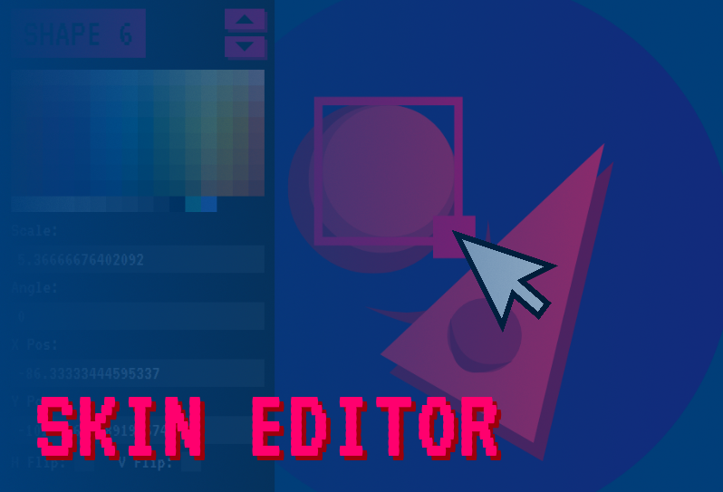
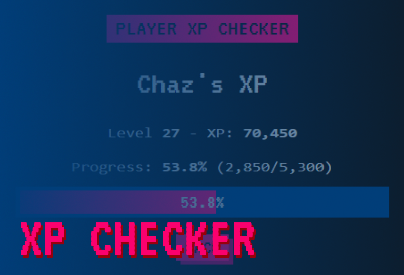
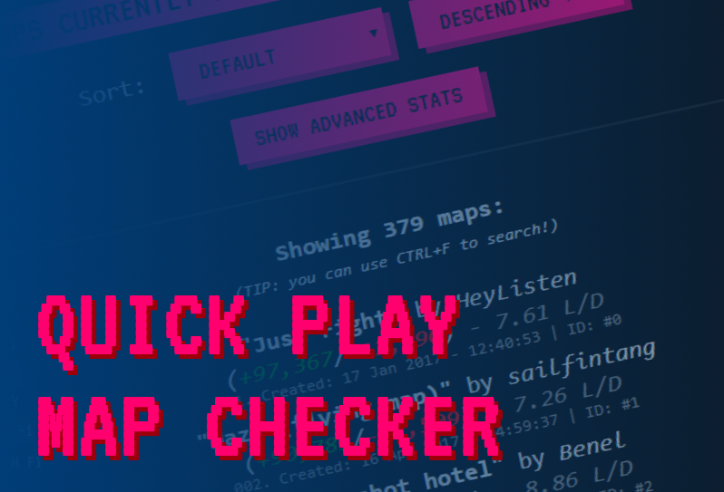
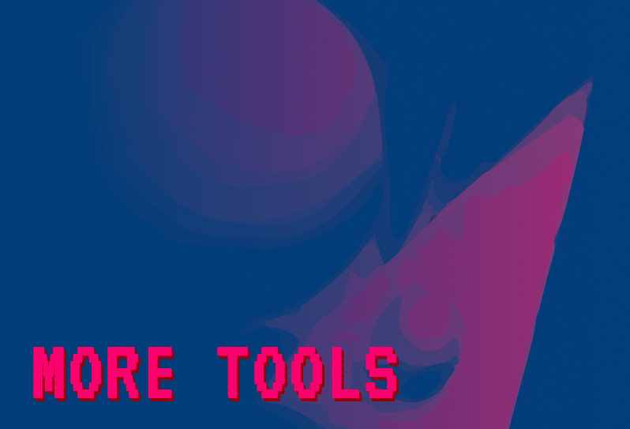
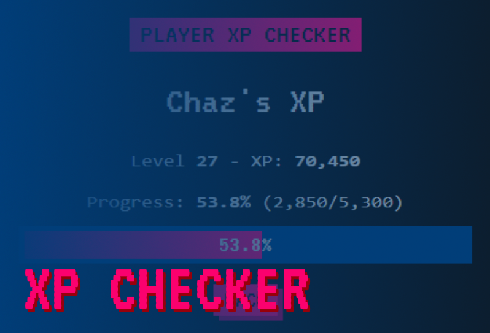
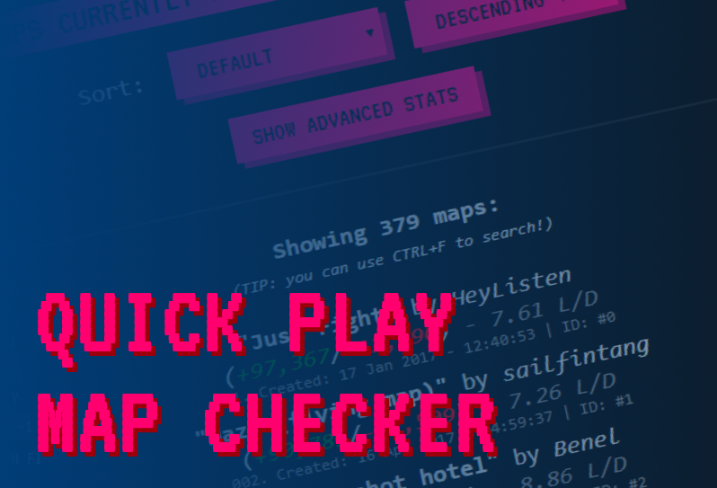
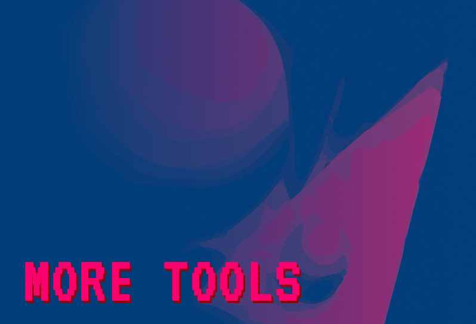
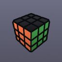
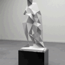

---
---

 





Join our Discord server!
Welcome to Bonk Leagues!
Bonk Leauges is a useful website for the popular game bonk.io where you can:
- Create and edit skins with revolutionary drag-and-drop controls with out Skin Editor,
- Manage, save and share unlimited skins with ease with our Skin Manager,
- Easily see a player's XP with our XP Checker,
- And use many more tools for your bonk.io needs... (see the menu above)
Why use Bonk Leagues?
Bonk Leagues is your go-to website for everything bonk.io, full of useful gaming tools.
Just listen to these testimonials:
"I think that Bonk Leagues is pretty useful for any bonk.io player"
- Rethlit
-
★★★★★ 4.5/5
It isn't FULL of features yet, but with a long period of no updates from Chaz it keeps Bonk.io fresh & innovated.
- ilikestalker
-
★★★★☆ 4/5
"The staff are friendly peeps and the features are on point 👌"
- The Blue Blur
-
★★★★★ 4.9/5
"Mac n Cheese is my choice of beverages"
- Gayfish
-
?¿?¿? 2113/5
Our Team
Here are the people behind making Bonk Leagues and related content:

Finbae#1155
Frontend & Web Dev

PitsPower#9562
Backend & Bot Dev

Dionysus#0001
Bad Dev lol